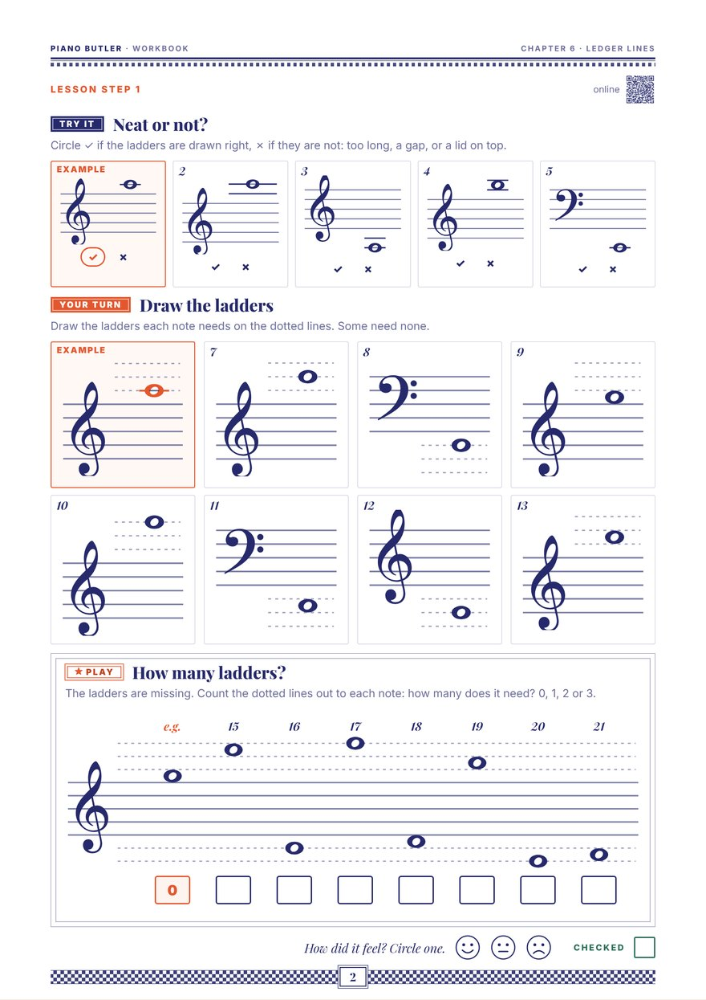

Notes don't stop at the edge of the staff. Short extra lines — ledger lines — are little ladders that let them climb out: up into the sky over the treble staff, down into the sea under the bass staff.
When a note is too high or too low for the five lines, we draw a short line just for that note: a ledger line (also spelled leger). Middle C sits on one — in this book it is Princess Clara's ladder. The pattern simply carries on outside the staff: line, space, line, space.
Drawing one neatly: a ledger line is a little wider than the note, the same distance apart as the staff lines, with no gaps back to the staff — and never one more than the note needs: a note in a space gets no lid on top.
In this book the treble staff is Queensland, the Queen's land. Start on its top line, F. Just above it, in the space, is G. Then ladder 1 carries A, the next space B, and ladder 2 carries C — Sky C. One letter a step, just like inside the staff, up to ladder 3: E.
The bass staff is Kingsland, the King's land. Climb down from its bottom line, G. Just under it is F; ladder 1 carries E, the next space D, and ladder 2 carries C — Sea C. One letter a step, backwards: G F E D C, down to ladder 3: A.
The ladders between the two staves are borrowed. The A on ladder 2 under the treble staff is the same key as the bass staff's top line, A; the E on ladder 2 over the bass staff is the same key as the treble staff's bottom line, E. Middle C sits on one ladder, seen from either staff. The same key can be written two ways — so each hand can stay in its own staff.
From low to high there are five Cs, an octave apart: Sea C on two ladders under the bass staff, Kingsland C in the bass staff's second space, Clara's C (middle C) on its ladder, Queensland C in the treble staff's third space, and Sky C on two ladders over the treble staff. Every ledger note in this chapter is a step or a skip from Sea C, Clara's C or Sky C.
Show each one at the piano.

Neat or not: circle a tick or a cross for four notes, then draw the ledger lines seven notes need on dotted guide lines (some need none), and count how many each of seven notes on a big staff needs — 0, 1, 2 or 3. One A4 page.
Print this pageThe whole chapter: Lesson Book + WorkbookThe same lesson with moving parts, and a seven-level drill: one ledger line above the treble staff, one below the bass staff, two lines, a step or a skip from Sky C and Sea C, the notes between the staves, up to three lines fast, and finding them on the keys.
Open the lessonA short line drawn above or below the staff for one note that is too high or too low for the five lines. The line-space pattern carries on through ledger lines exactly as it does inside the staff. "Leger line" is another spelling of the same thing.
First count out from the edge of the staff — line, space, ledger line — one letter a step. Then learn a few ledger notes by heart, such as the C two ledger lines above the treble staff and the C two ledger lines below the bass staff, and read the notes near them as a step or a skip away.
Draw it a little wider than the note head, the same distance apart as the staff lines, with no gaps back to the staff. Draw only as many as the note needs: a note just above or below the staff needs none, and a note in a space gets no extra line on top, like a lid.
Between the treble and bass staves, a note can be written with ledger lines under the treble staff or on the bass staff (or with ledger lines over the bass staff). It is the same key on the piano. Writing it in the hand's own staff keeps each hand in one place on the page.